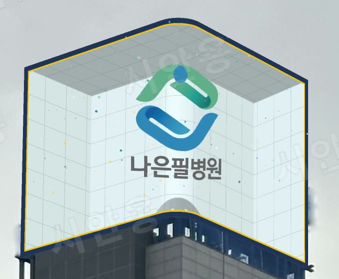
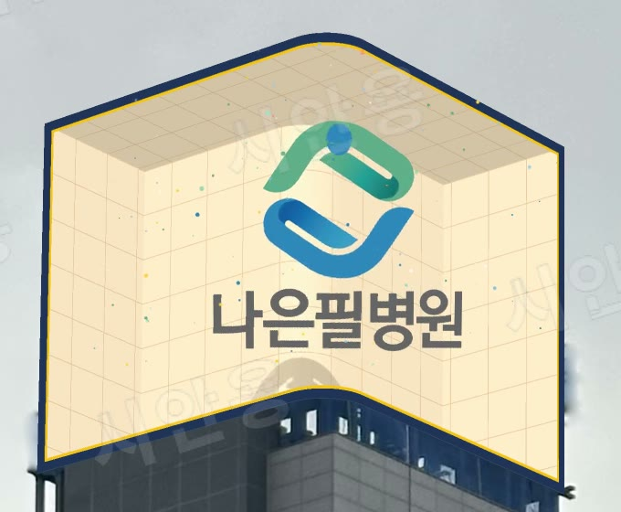
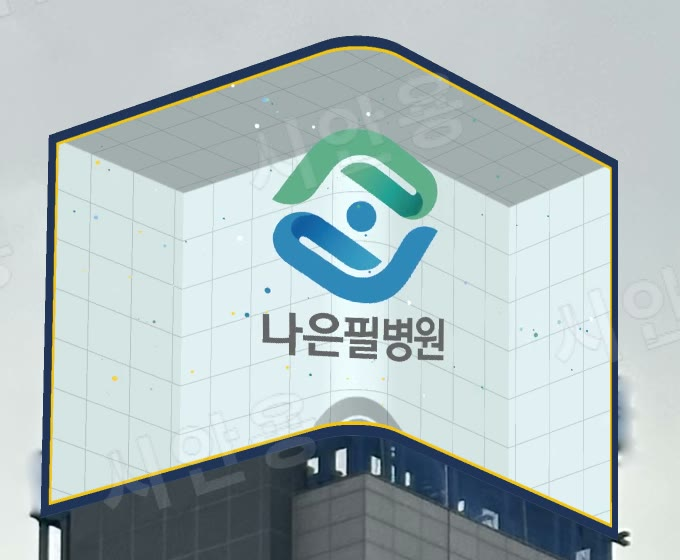
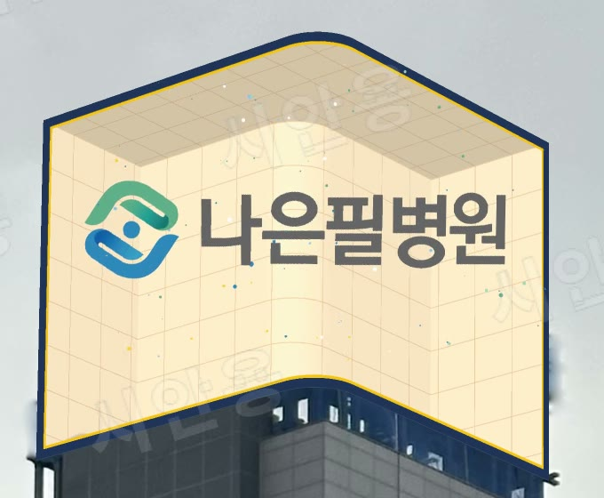

1
‘나은필병원’ 이름을 크게, 가로형도
- 주신 의견
- 멀리서 ‘나은필병원’이 잘 안 보입니다. 가로형(심벌 옆 이름)도 꽉 차게 넣고, 세로형 아래 이름도 크게.
- 반영한 내용
- 세로형 로고의 이름을 1.5배로 키웠습니다. 로고 화면마다 가로형 로고가 화면을 꽉 채워 약 4초 머뭅니다(15분 동안 20번).


11.07 시안

지금

11.07 시안

지금